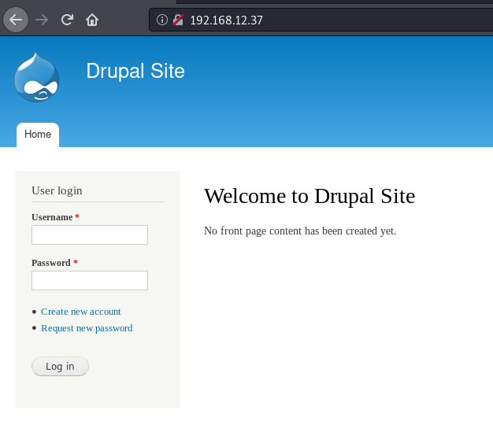
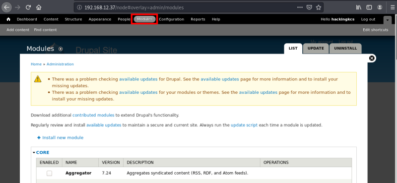
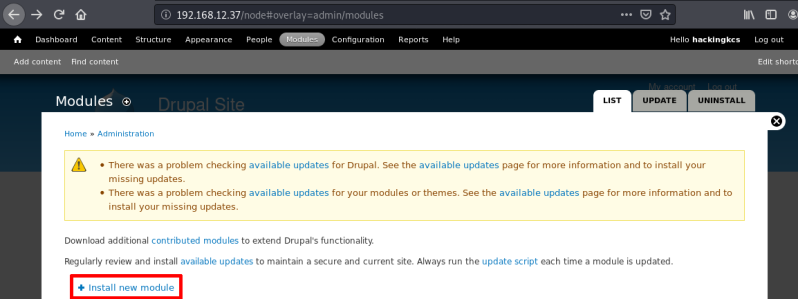
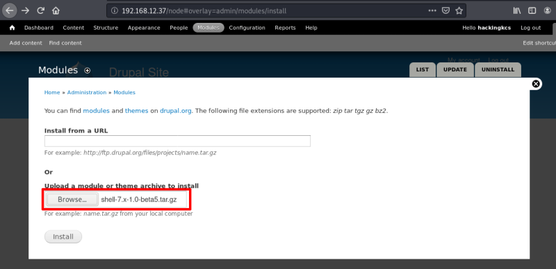
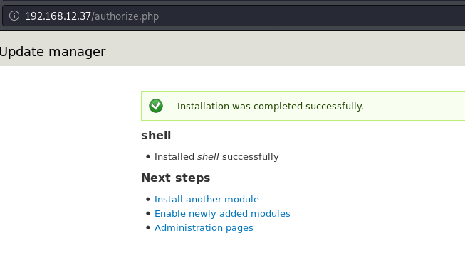
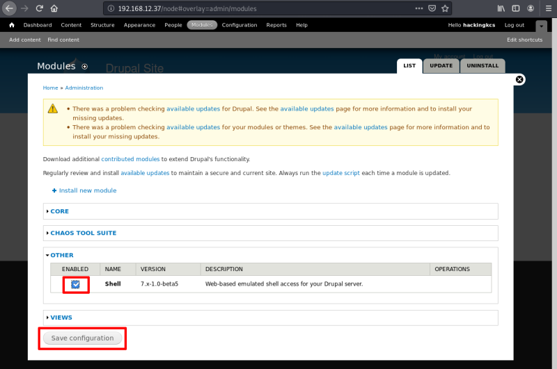
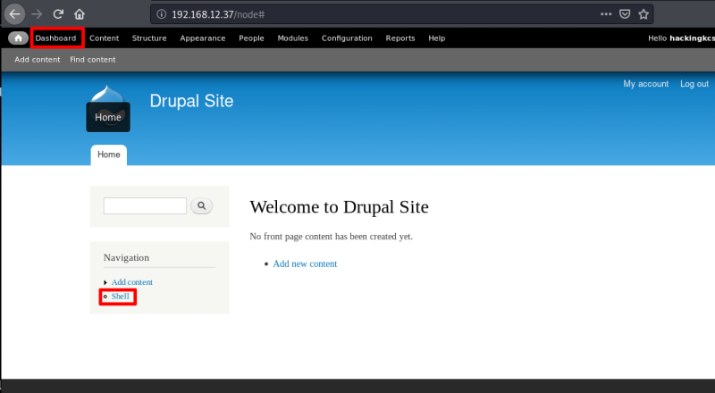
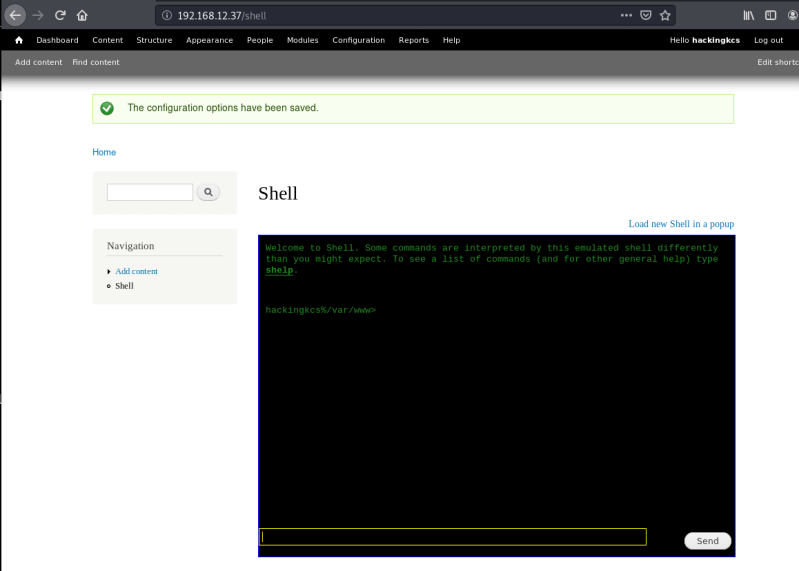

4.2 Log as Admin
a) We have to log as the new “Admin” account.
Go to http://192.168.12.37 and log,
User: hackingkcs
Password: P@ssw0rd
Output:

b) After logging go to “Modules” option.
Output:

c) Download a new module which allow to get a “shell” on the back-end server.
Download it from: https://ftp.drupal.org/files/projects/shell-7.x-1.0-beta5.tar.gz
More info about the module: https://www.drupal.org/project/shell
d) Install the module.
Choose “Install New Module” in Modules option.

Choose the file you downloaded in the c point.


e) Come back to “Modules” option and enable the moule.
Save configuration.

f) Go to the new Module.


 Index
Index